← Retour à l'accueil

Limites et possibilités d'un vol de drone
Au Canada, l'utilisation des drones est encadrée par des règles précises.
Drone Abitibi étant pour l'instant un projet de marque en développement,
cette page a uniquement pour objectif d'expliquer, de manière générale,
ce qu'un vol de drone peut faire et ce qu'il ne peut pas faire.
Il s'agit d'information destinée au public, et non d'une offre de services.
Possibilités
-
Altitude d'environ 120 m — permet des vues aériennes très larges tout en restant sous les limites réglementaires.
-
Autonomie d'environ 30 minutes — plusieurs batteries permettent d'enchaîner plusieurs vols.
-
Positionnement GPS/GNSS — stabilisation précise (environ 1–2 m) grâce à plusieurs constellations satellites.
-
Évitement d'obstacles — aide à éviter certains obstacles, mais avec des limites (angle, lumière, surfaces).
-
Surveillance des interférences radio — les drones ajustent la puissance du signal, mais les zones urbaines peuvent réduire la portée.
-
Retour automatique (RTH) — activation en cas de perte de signal ou batterie faible, lorsque le GPS est disponible.
-
Photos/vidéos programmées — possibilité de répéter le même angle, la même altitude ou la même trajectoire pour suivre un site dans le temps.
-
Vue en temps réel + diffusion en direct — transmission vidéo au pilote et possibilité de diffuser vers YouTube ou d'autres plateformes.
-
Photogrammétrie — capture d'images permettant de produire : orthophotos et modèles 3D, via un logiciel externe.
Limites
-
Visibilité directe (VLOS) — le drone doit rester visible à l'œil nu,
même si la vidéo peut aller plus loin.
-
Vie privée — aucun survol intentionnel de personnes ou de propriétés privées
sans autorisation, et limitation de toute capture intrusive.
-
Zones restreintes — aéroports, héliports, infrastructures critiques,
parcs nationaux, etc. nécessitent des autorisations.
-
Météo — vent fort, pluie, givre ou signaux GPS faibles peuvent
restreindre ou empêcher un vol. Le froid affecte l'autonomie des batteries.
-
Capteurs d'évitement — inefficaces dans certaines directions ou conditions
(nuit, surfaces brillantes, branches fines). Ce n'est pas un système infaillible.
-
Portée et interférences — les bâtiments, pylônes et réseaux urbains
réduisent la qualité du signal; le retour automatique dépend du GPS.
-
Vols de nuit — permis seulement avec éclairage anticollision; perception
des distances plus difficile et évitement d'obstacles souvent désactivé.
Approche et bonnes pratiques
Un vol de drone bien préparé vise toujours à maintenir une marge de sécurité élevée.
De manière générale, cela implique :
- une analyse minimale du site et des risques potentiels;
- une vérification de l'environnement aérien et des obstacles;
- la planification de trajectoires réalistes et sécuritaires;
- le maintien de distances adéquates avec les personnes, bâtiments et véhicules.
L'objectif, pour toute opération responsable, est de privilégier
la sécurité, le respect du cadre réglementaire et la cohabitation avec la communauté.
Sources officielles
Pour plus de détails ou pour consulter les règles complètes applicables aux drones au Canada,
voici les ressources officielles de Transport Canada :